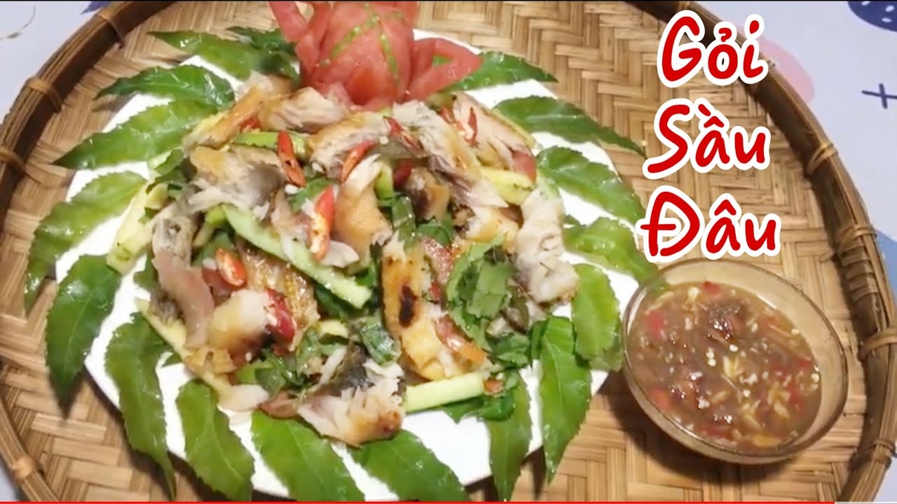
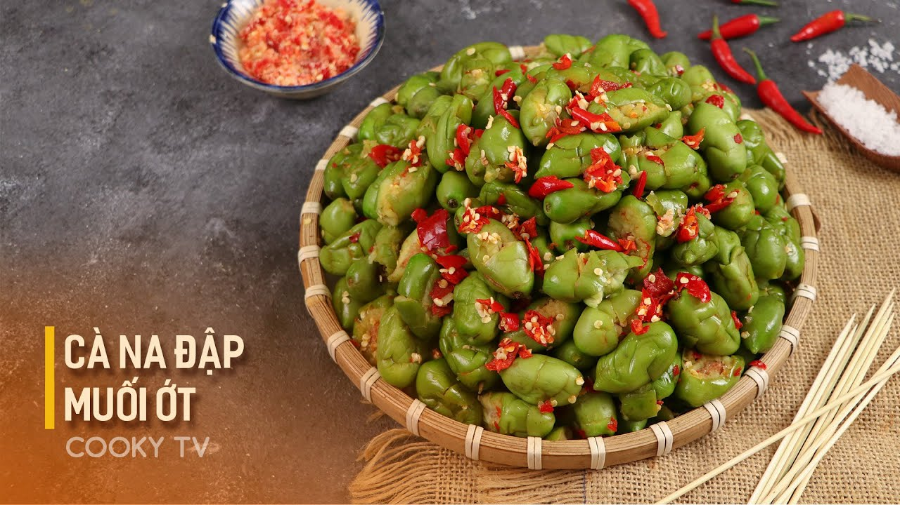
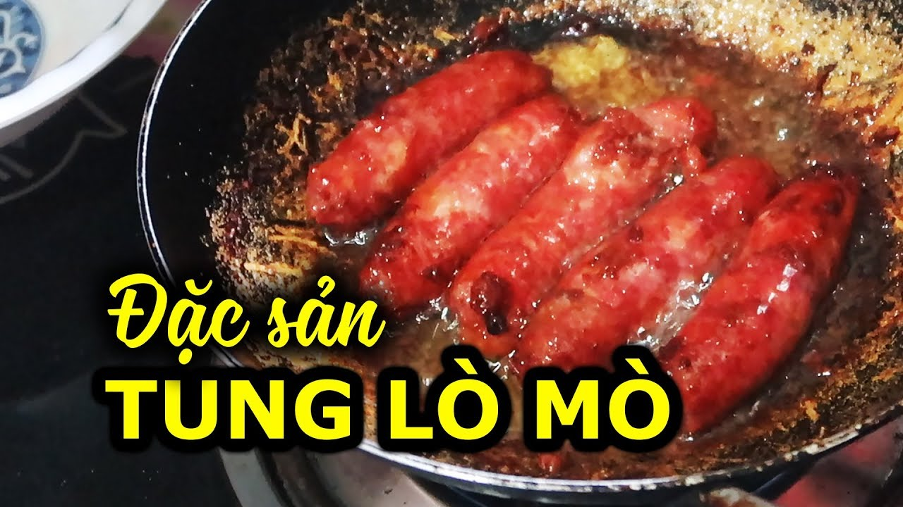
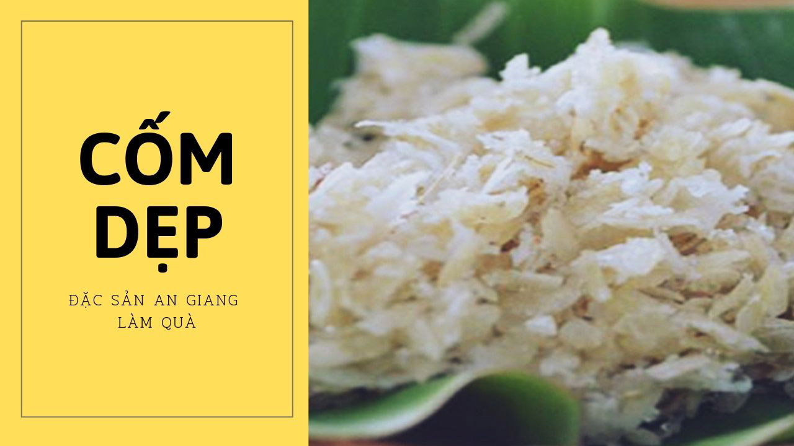
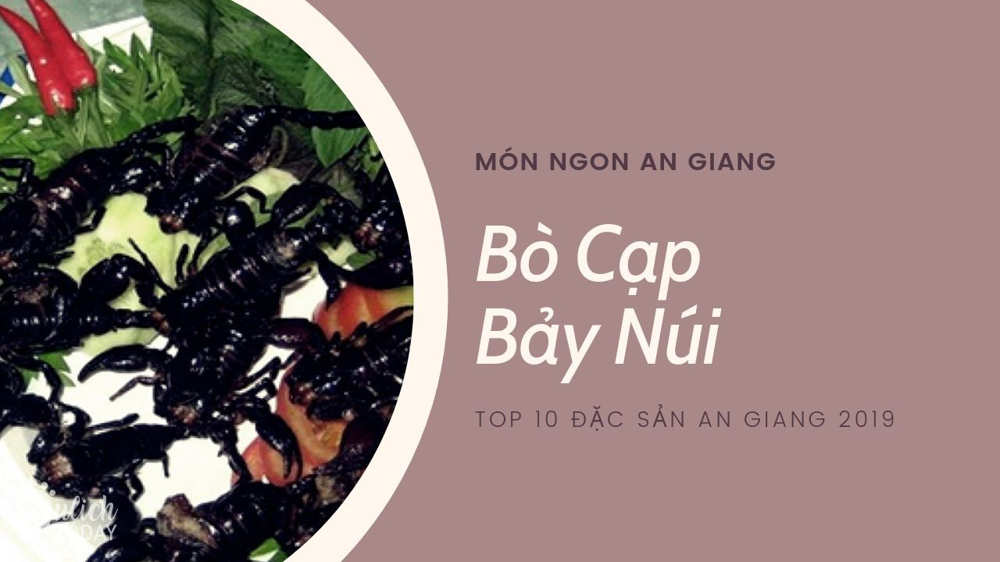
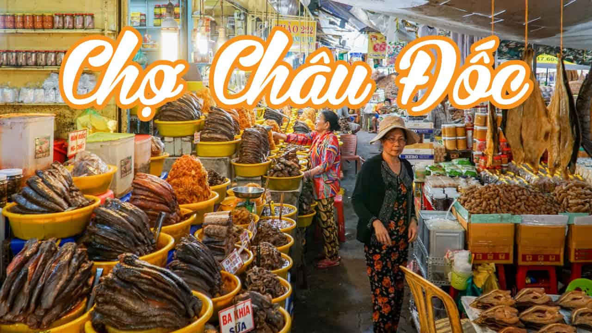

Đặc sản An Giang rất đa dạng và phong phú. Vì đây là vùng đất có rất nhiều đồng bào dân tộc cư trú: Chăm, Khmer, Hoa, Việt. Với sự giao thoa của nhiều dân tộc, tạo nên nền ẩm thực đa dạng của An Giang. Có thể nói An Giang là nơi hội tụ nét ẩm thực đặc sắc của miền Tây Nam Bộ.
Gỏi sầu đâu:
Cây sầu đâu mọc nhiều ở các vùng Tân Châu, Tri Tôn, Châu Đốc, Tịnh Biên (An Giang). Món gỏi này được chế biến đơn giản, nhanh gọn. Lá non và hoa sầu đâu được rửa sạch trụng qua nước sôi cho bớt đắng, sau đó để ráo nước. Dưa leo, thơm (dứa) và xoài thái mỏng hoặc xắt sợi. Người miền Tây thường làm món gỏi sầu đâu khô cá lóc hoặc khô cá sặc. Khô cá nướng xé nhỏ, thịt ba chỉ luộc xong thái mỏng, cho thêm ít tôm bóc vỏ.

Cà na đập:
Chợ Châu Đốc chỉ có duy nhất một người bán cà na đập – món ăn được đặt tên theo cách chế biến. Quả cà na tươi, sau khi đập nát, vắt bớt nước và chà xát để ra hết chất chát thì đem dầm đường, chờ khoảng vài tiếng đồng hồ là có thể sử dụng.
Món này phải khéo léo sao cho quả cà na bị đập không quá nát, vẫn giữ màu xanh tươi sau khi chà xát, vắt nước nhưng hương vị còn nguyên, ăn vẫn giòn. Cà na đập ăn chung với muối ớt, vừa ngọt, vừa giòn rất ngon.

Ngoài cà na, ở An Giang còn có các loại cây trái đặc sản như thốt nốt, hồng quân, trái mây…
Tung lò mò:
“Tung lò mò” chính là một tên gọi khác của món lạp xưởng bò. Đây là món ngon độc đáo của người Chăm ở An Giang. Từ lâu, người Kinh cũng ưa thích và chế biến món lạp xưởng bò gần giống như của người Chăm và hiện phổ biến rộng rãi ở Tân Châu(xã Châu Phong), Châu Đốc, Tịnh Biên và Tri Tôn.
Khác lạp xưởng lợn, lạp xưởng bò sau khi làm xong chỉ cần phơi cho khô là có thể đem chiên hoặc nướng. Hấp dẫn nhất là lạp xưởng nướng trên bếp than hồng. Khi nướng chín xong cắt ra thành viên có màu đỏ hồng, hương bay thơm phức không còn mùi mỡ bò.

“Tung lò mò” nướng nên chín tới đâu, ăn tới đó. Khi ăn sẽ thấy vị ngọt bùi của thịt và mỡ bò, vị chua chua của cơm nguội lên men hòa cùng gia vị cay của ớt, lại ăn kèm với rau sống, rau cần tươi, vị chua của khế, vị chát của chuối sống. Lạp xưởng bò khi ăn phải chấm muối tiêu chanh hoặc tương ớt. Hấp dẫn hơn là có ăn kèm rau sống và ăn chung với bún hoặc bánh mì.
Cốm dẹp:
Nếp trước lúc thu hoạch khoảng 10 ngày còn chưa già sẽ được gặt về trút lấy hạt ngâm nước nửa ngày vớt ra để ráo.

Ngâm nếp phải canh giờ nếu không ngâm lâu hạt nếp mềm cốm sẽ nhão, ngâm thời gian ngắn thì hạt nếp sẽ khô cứng. Rang nếp phải là người quen tay và rang trong nồi đất nhằm giữ được nhiệt nóng lâu hơn. Một lần rang rất mất thời gian và công sức chỉ một chén nếp, trút vừa đáy nồi đất giúp việc đảo rang được dễ dàng và hạt nếp nở chín dẻo đều.
Bò cạp Bảy Núi:
Bò cạp hay còn gọi là “bù kẹp”, có màu đen nhánh, hai càng to kềnh, to cỡ con dế cơm. Thoạt nhìn bò cạp trông giống như con gián bò lổn ngổn. Về vùng Bảy Núi có thể thấy loại này được bán dọc hai bên đường. Để có được những con bò cạp thế này, những người chuyên săn lùng con vật này phải lên núi mới có. Họ trang bị một cây cuốc, một cây kẹp và một cái xô. Tìm thấy tảng đá nào khả nghi, họ chỉ cần lật tảng đá sang một bên, nhìn miệng hang thò kẹp vào.

Sau khi “thu hoạch” xong, họ mang bò cạp về bỏ vào thau vài ngày cho “sạch bụng”. Để nguyên con vậy và rửa sạch, cho vào chảo mỡ hoặc dầu đang sôi. Khoảng vài phút sau, bò cạp chín, bốc mùi thơm lạ lùng. Bò cạp dùng kèm rau thơm, cà chua, dưa leo và vài cọng ngò, chấm với muối tiêu chanh. Cắn một miếng, giòn rụm và vị beo béo. Theo những người sành ăn món này, bụng của bò cạp mới là phần ngon nhất.
Món bò cạp này còn được chế biến theo các kiểu khác như bò cạp lăn bột chiên bơ. Một số người Khmer địa phương còn dùng bò cạp ngâm với rượu, uống để chữa các chứng đau lưng, nhức mỏi, đau khớp,…
Mắm Châu Đốc:

Mắm Châu Đốc có bán khắp nơi nhưng tập trung nhiều nhất là ở chợ Châu Đốc. Hình thù mắm cũng vô cùng đa dạng. Vì tùy từng loại cá, cách thức chế biến mà người ta có thể xé nhỏ, để nguyên con, lóc lấy phi lê hoặc để cả xương. Một vài loại mắm dễ ăn mà bạn có thể mua tại chợ là mắm linh, mắm sặt, mắm lóc, mắm trèn, mắm rô, mắm chốt… Những loại này ăn sống hay dùng chưng, nấu mắm (mắm kho, bún, lẩu) đều rất ngon. Nếu đến An Giang, du khách sẽ có thể thưởng thức được món “lẩu cá linh non nấu với bông điên điển” – một món ăn đặt sản nổi bật nơi đây. Đặc biệt khô cá tra ở đây là cá tra từ Biển Hồ (Campuchia), thịt ngọt tự nhiên, lại được phơi khéo, canh vừa nắng nên thịt thơm béo, không bị tanh. Một loại mắm bán nhiều và cũng rất được ưa chuộng ở chợ Châu Đốc là mắm thái. Đó là con mắm lóc ngon được lạng bỏ da bỏ xương xé nhỏ trộn với đu đủ xắt sợi và thịt ba rọi ram, thêm thính gạo, đường, ớt vào. Ở xứ mắm Châu Đốc, đường dùng làm mắm cũng là đường thốt nốt đặc sản, pha thêm ít đường trắng nên mắm có vị ngọt mặn rất thanh, ăn kèm rau sống, chuối chát, thịt ba rọi luộc.